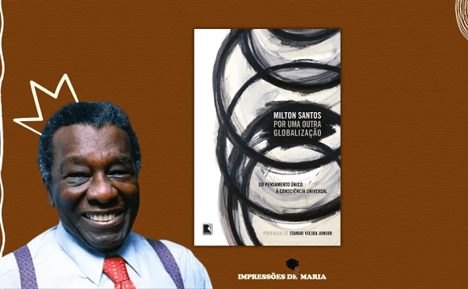
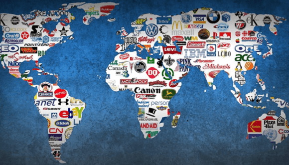
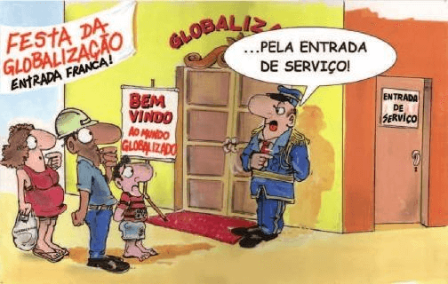

Conteúdo: Mundo atual. Desenvolvimento x subdesenvolvimento. Divisão internacional do
trabalho. Desigualdades socioespaciais. Globalização.
Objetivo: Caracterizar o mundo atual. Identificar e entender as principais características
da sociedade no capitalismo atual, a divisão internacional do trabalho e suas desigualdades socioespaciais e
os processos que ocorrem no espaço geográfico.
Digite seu nome
Introdução
Essa última etapa do ensino médio promete ser muito agitada em relação ao
aprendizado da Geografia. Isso porque vamos embarcar em uma jornada pela Geografia do mundo.
Ao longo deste ano, exploraremos a população mundial, seu crescimento e movimentos demográficos. Analisaremos
o desenvolvimento e qualidade de vida, abordando indicadores como educação, saúde e poder de consumo, e sua
relação com o progresso das nações. Investigaremos o impacto da industrialização na formação de blocos
econômicos e na globalização.
Conheceremos diferentes regiões, como América do Norte, Américas Central e do Sul, África e Oriente Médio,
compreendendo seus desafios, conflitos e desigualdades. Abordaremos também temas como agricultura, redes de
transporte e comércio global. E ai, Estão preparados para explorar a diversidade da Ásia, Oceania e União
Europeia, e desvendar os segredos da dinâmica do mundo atual?
Vamos lá! E para isso temos a honra de conhecer o maior geógrafo brasileiro de todos os tempos!
Duvid - Podcast
Duvid – Entrevista Milton Santos (1926-2001 - in memoriam)

Duvid: Bem-vindos ao Duvid Podcast! um programa desenvolvido para os alunos do ensino médio,
apresentando por
mim Duvid. E hoje temos o privilégio de receber um convidado especial, o renomado geógrafo Milton Santos.
Nascido em Brotas de Macaúbas, no Estado da Bahia, em 1926, foi exilado na França durante 12 anos
trabalhando em grandes universidades francesas, e se tornou uma figura proeminente no campo da Geografia e
deixou um legado significativo para o entendimento das relações entre espaço, sociedade e globalização,
dentre mais de 40 livros e artigos publicados.
Nesta conversa, teremos a oportunidade de explorar os insights e ideias do professor Milton Santos,
principalmente em seu livro: Por uma outra Globalização: do pensamento único à consciência universal, e
entender melhor seu pensamento crítico e vislumbrar possibilidades de transformação em um mundo em constante
mudança. É uma honra tê-lo aqui conosco professor.
Prof. Milton Santos: Eu estou muito sensível em participar desse programa e conversar sobre
Globalização,
que é nosso filé mignon, afinal. (risos).
Duvid: Prof. o Sr. poderia nos dizer, inicialmente, o que é o mundo hoje?
Prof. Milton Santos: Certamente. É muito perceptível que vivemos em um mundo confuso e
também o percebemos de
forma confusa. Há, como é muito mencionado, um extraordinário progresso das ciências e das técnicas, de um
lado, e uma aceleração contemporânea dada pela ideia de velocidade, de outro, e isso faz parte do mundo
físico criado pelo homem. É importante descobrir como se produz a história humana sobre essa base material
que vivemos na era da globalização. Eu diria que, se quisermos escapar à crença de que esse mundo assim
apresentado é verdadeiro, e não queremos admitir a permanência de sua percepção enganosa, devemos considerar
a existência de pelo menos três mundos em um só.
Duvid: e quais seriam esses mundos, professor?
Prof. Milton Santos: Existem três perspectivas diferentes sobre o mundo atual. O primeiro é
o mundo como nos
fazem crer, onde a globalização é vista como uma fábula que sustenta uma série de fantasias. Nessa visão,
são difundidos mitos como a aldeia global, o encurtamento de distâncias e a homogeneização do planeta pelo
mercado global, enquanto as diferenças locais são aprofundadas. O culto ao consumo é incentivado e o
fortalecimento do Estado serve aos interesses financeiros, em detrimento das populações.
Por outro lado, temos o mundo como é, no qual a globalização se apresenta como uma fábrica de perversidades.
O desemprego crescente, o aumento da pobreza, a queda na qualidade de vida da classe média, a fome
generalizada, as doenças e a educação inacessível são algumas das consequências negativas desse processo. A
competitividade exacerbada e a adesão aos comportamentos hegemônicos são apontados como responsáveis por
essas mazelas.
No entanto, há uma terceira perspectiva, que vislumbra a possibilidade de construir um outro mundo por meio
de uma globalização mais humana. As bases técnicas e o conhecimento do planeta podem ser utilizados para
outros fins sociais e políticos. Nesse sentido, destacam-se fenômenos como a mistura de povos, raças,
culturas e filosofias, a aglomeração populacional em áreas menores e a emergência de uma cultura popular.
Esses alicerces permitem a reconstrução das relações locais e a utilização do sistema técnico atual em
benefício dos seres humanos. Além disso, teoricamente, a possibilidade de se conhecer o mundo em instantes
possibilita uma nova compreensão do Planeta e a escrita de uma nova história.
Duvid: E de que forma esses mundos estão ligados à globalização? Como podemos defini-la?
Prof. Milton Santos: Eu creio que a globalização é, de certa forma, o ápice
do processo de
internacionalização do mundo capitalista. Para entende-la, devemos analisar as técnicas e a política de
forma conjunta. As técnicas são esse aparato que estão a nossa disposição, como a internet por exemplo, e a
política são as ações que asseguram como devemos usar todo esse emaranhado de objetos em um mercado, agora
chamado de global.
Duvid: E o que faz a globalização atual ser diferente da época romana ou mesmo no período
das grandes
navegações ou do período da existência da antiga União Soviética?
Prof. Milton Santos: É pouco arriscado analisar a história somente a partir de um único
evento. Há alguns
fatores que explicam a arquitetura da globalização, como ela surgiu. O primeiro deles é a evolução dos
sistemas técnicos. Se antes o homem possui a enxada, a foice e o arado rudimentar; hoje
temos a informação, a cibernética, a informática e eletrônica funcionando em conjunto. Isso vai permitir
grandes coisas como a comunicação instantânea e a capacidade de agirmos em vários lugares ao mesmo tempo.
Nunca houve esse envolvimento do Planeta como um todo, de maneira imediata. Eu quero dizer que cada lugar
tem acesso aos acontecimentos dos outros.
Duvid: Quer dizer que todos nós podemos participar desse mundo conectado e aproveitar essa
evolução
tecnológica?
Prof. Milton Santos: Devemos nos perguntar antes, quem são os atores desse tempo real: Somos
todos nós? A
ideologia de um mundo só e da aldeia global diz isso, mas creio que estamos longe desse ideal, todavia
alcançável.
Duvid: Interessante prof. Poderia explorar mais esse ponto sobre por que ainda as fronteiras
não foram
eliminadas no mundo?
Prof. Milton Santos: Um grande fato que ocorreu no mundo foi o surgimento, nunca antes, das
empresas mundiais
(multinacionais), que competem entre si segundo uma concorrência extremamente feroz. Cada
vez mais sedentas para explorarem novos lugares, também precisam de mais e mais tecnologia, crédito, novos
materiais para aumentar seu poder perante as outras. Agora que todo o Planeta é conhecido, mapeado, cada
lugar é valorizado diferentemente pelas empresas. O resultado disso são crises permanentes, ocorrendo uma
após a outra, justamente para controlar os sistemas técnicos atuais cujo centro é o computador conectado na
rede mundial pela internet. E as fronteiras, agora, são quase livres para o dinheiro, não para as pessoas.

Duvid: o Sr. diz, crises financeiras a todo momento?
Prof. Milton Santos: Uma crise global contínua amparado no sistema
financeiro que utiliza do
dinheiro e da informação para se instalar nos mais variados lugares do mundo a partir de um interesse
externo, de fora.
Duvid: o que inclui as firmas multinacionais pelo mundo?
Prof. Milton Santos: Elas são parte disso, mas há uma tirania da informação e do dinheiro
que segue um
sistema ideológico. Antes da chegada de uma empresa que não possui nenhum interesse em desenvolver o país em
que se instalou, há todo um discurso sobre modernização e com enorme publicidade. Isso gera
algumas fábulas, como aldeia global e de que o espaço e o tempo estão contraídos graças a velocidade. Só que
a velocidade apenas está ao alcance de um número limitado de pessoas.
Duvid: Eu não tinha pensado dessa forma. O meu primo que mora no interior, nunca viajou de
avião e onde ele
mora não tem nem shopping center ainda!
Prof. Milton Santos: Essa sua percepção é muito sensata já que o espaço com seus objetos ou
com a ausência
deles, nos autoriza ou nos proíbe de realizarmos nossas ações. Dessa forma cada homem vale pelo lugar onde
está: o seu valor como produtor, consumidor, cidadão, depende de sua localização no território. Seu valor
vai mudando, incessantemente, para melhor ou para pior, em função das diferenças de acessibilidade (tempo,
frequência, preço), independentes de sua própria condição. Pessoas, com as mesmas virtualidades, a mesma
formação, até mesmo o mesmo salário têm valor diferente segundo o lugar em que vivem: as oportunidades não
são as mesmas. Por isso, a possibilidade de ser mais ou menos cidadão depende, em larga proporção, do ponto
do território onde se está. Enquanto um lugar vem a ser condição de sua pobreza, um outro lugar poderia, no
mesmo momento histórico, facilitar o acesso àqueles bens e serviços que lhes são teoricamente devidos, mas
que, de fato, lhe faltam.
Duvid: ...quer dizer que nem tudo depende exclusivamente do indivíduo. Ainda mais na
globalização atual. Como
o sr. caracterizaria essa globalização?
Prof. Milton Santos: Eu considero a globalização atual como perversa, por algumas razões.
Primeiro pela
violência da informação. Sempre sonhamos com a ampliação do conhecimento do planeta, das sociedades que o
habitam, todavia as técnicas da informação são utilizadas principalmente por um punhado de atores em função
de seus objetivos particulares. O grau de manipulação da informação é substancial e o papel da publicidade
se tornou o centro do comércio.
Em segundo lugar, a violência do dinheiro. Com a prevalência do dinheiro em estado puro, como motor primeiro
e último das ações, o homem acaba por ser considerado um elemento residual. O que estamos vivendo hoje é que
o homem deixou de ser o centro do mundo. O centro do mundo agora é o dinheiro.

Duvid: a sociedade que surgirá dessa violência, com certeza não será boa.
Prof. Milton Santos: Exatamente. Neste mundo globalizado há um discurso de que não há
alternativa a não ser
aceitar o que está ai. A competitividade, o consumo, a confusão dos espíritos e a ausência de compaixão são
marcas do nosso período. Jamais houve na história um período em que o medo fosse tão generalizado e
alcançasse todas as áreas da nossa vida: medo do desemprego, medo da fome, medo da violência, medo do outro.
Duvid: Isso tudo seria o lado negativo da globalização? Poderia dar mais exemplos?
Prof. Milton Santos: Eu creio que vivemos uma fábrica de perversidade. A fome deixa de ser
algo isolado e
torna-se permanente. Ela atinge mais de 900 milhões de pessoas espalhadas em todos os continentes. Mais de
bilhões de pessoas sobrevivem sem água potável. Nunca houve na história um número tão grande de deslocados e
refugiados. A pobreza também aumentou, com bilhões (3,4 bi) ganham menos de um dólar por dia. O desemprego é
algo tornado comum, algo “natural”, inerente ao próprio processo. A globalização, nesse sentido, mata a
noção de solidariedade, devolve o homem à condição primitiva do cada um por si e, como se voltássemos a ser
animais da selva, reduz as noções de moralidade pública e particular a um quase nada.
Duvid: confesso que fiquei um pouco sem esperança, prof. diante desse cenário. Como fica o
território
brasileiro diante dessa globalização implacável?
Prof. Milton Santos: Não estamos sem saída, não temos somente uma única forma de
globalização. Não é o
passado o mestre da vida, nossa âncora deve ser o futuro. Eu vejo o mundo pelo território, além do mais, o
território não é somente um conjunto de sistemas naturais e coisas criadas pelo homem. O território é o chão
e mais a população, isto é, uma identidade, o fato e o sentimento de pertencer àquilo que nos pertence. O
território é a base do trabalho, da residência, das trocas materiais e espirituais e da vida, sobre os quais
ele influi. A questão que se coloca é a seguinte: vamos reconstruir a federação para servir melhor ao
dinheiro ou para atender à população?
Duvid: Essa última pergunta é a mais importante prof. Todo esse sistema global acaba por
eliminar as
sociedades locais?
Prof. Milton Santos: O sistema é persuasivo, mas não obteve total êxito. Temos o espaço das
firmas, dos
fluxos e das redes, por um lado; e temos o espaço banal que seria o espaço de todos: das empresas,
instituições, pessoas, o espaço das vivências, por outro lado. Esse último espaço é que cria as
solidariedades orgânicas, aquelas relações enraizadas com o território, mesmo que não sejam resultado de
pactos explícitos nem de políticas claramente estabelecidas, o convívio com o outro cria relações de
trabalho, de trocas, mesmo a cidade grande é um refúgio para os pobres nesse contexto.
Duvid: O território como o sr. o descreveu, seria esse suporte para a população diante da
globalização?
Prof. Milton Santos: De certa forma sim. Mesmo que desorganizado, o convívio entre aqueles
subalternizados,
hegemonizados recria uma ideia e um fato para outra Política. As pessoas comparam: por que meu lugar é
diferente dos outros? Há uma busca de sentido, mesmo se os objetivos não sejam comuns. O território se
transforma, assim, em algo mais do que um simples recurso, mas também em um abrigo.
Duvid: Quer dizer que nesse contexto pode haver uma outra globalização, um outro mundo
possível que o sr.
destacou no início da nossa conversa?
Prof. Milton Santos: Eu creio que sim, justamente por essa esquizofrenia que tanto o
território quanto os
lugares acolhem. Os vetores da globalização, que neles se instalam para impor sua nova ordem, acaba por
produzir uma contraordem, devido a essa produção acelerada de pobres, excluídos, marginalizados.
Essa busca pela sobrevivência adiciona um pragmatismo mesclado com a emoção, que é também, de certo modo,
uma insurreição em relação à globalização, com a descoberta de que, a despeito de sermos o que somos,
podemos também desejar ser outra coisa.
Duvid: Quer dizer que a globalização possui um limite?
Prof. Milton Santos: É o que estamos tentamos analisar ao longo do tempo. A ciência aponta
para o futuro,
para os sinais indicativos de que outros processos podem, paralelamente, se levantar, o que nos autoriza a
falar de uma fase de transição para um novo período.
Duvid: Prof., e quais seriam essas indicações, essas novas variáveis para a construção de um
novo mundo?
Prof. Milton Santos: Por enquanto, renunciamos fornecer uma lista exaustiva dos fenômenos,
mas apontar alguns
fatos que nos parecem bem característicos das mudanças em curso. Um deles é o próprio desencanto com as
técnicas e uma preocupação com o bom senso. Como os pobres não tem, em sua maioria, acesso as técnicas
modernas, eles criam as suas próprias, ora adaptando-as, ora copiando-as, onde a preocupação está centrada
nas pessoas, isto é, um período popular da história.
Duvid: Então prof, o período que o senhor descreve, em que surgem novas práticas e
contra-racionalidades, é
resultado da indiferença daqueles que não alcançaram o sucesso prometido pela globalização?
Prof. Milton Santos: De fato, é uma forma de ver as coisas. Essa percepção e, especialmente,
a experiência da
escassez levam muitas pessoas, que podem estar desinteressadas ou incapacitadas, a não mais seguir as leis,
normas, regras e costumes derivados da racionalidade predominante que prometeu salvar a humanidade através
da globalização atual. Muitos daqueles considerados "ilegais" ou "informais", que antes se conformavam,
passam a se opor à racionalidade dominante. Surgem novas práticas e contra-racionalidades, e muitos falam em
irracionalidade, especialmente entre os menos favorecidos, aqueles que estão em desvantagem na sociedade.
Duvid: Um exemplo seriam os vendedores ambulantes, os comerciantes de rua, os trabalhadores
sem carteira
assinada etc?
Prof. Milton Santos: Esses seriam os homens lentos, aqueles que não conhecem a velocidade, o
modo de vida
racional e moderno, mas vivem a experiência da escassez, ou seja, “aquilo que falta a mim, mas que o outro
mais bem situado na sociedade possui”.
Cada dia acaba oferecendo uma nova experiência da escassez. Por isso não há lugar para o repouso e a própria
vida acaba por ser um verdadeiro campo de batalha. Vivemos uma sociedade que cria, mediante o mercado e a
publicidade, desejos insatisfeitos, objetos novos, mas também a percepção dos “não-possuidores” também
aumenta.
É dessa forma que, na convivência com a necessidade e com o outro, se elabora uma política, a política dos de
baixo, constituída a partir das suas visões do mundo e dos lugares. É uma política dos pobres alimentada
pela simples necessidade de continuar existindo.
Duvid: Pelo que entendi prof., a globalização tem dois lados diferentes. Por um lado, ela
traz informações
rápidas e conexões rápidas para pessoas que têm mais recursos. Essas pessoas vivem um estilo de vida moderno
e têm acesso a muitas oportunidades. Por outro lado, a globalização também permite que informações cheguem a
todos os lugares do mundo, o que faz com que as pessoas que têm menos recursos possam comparar suas vidas
com as daqueles que são mais prósperos. Isso mostra uma diferença entre as promessas de uma vida melhor e a
realidade da escassez que essas pessoas vivem. Essa diferença cria uma política entre os menos favorecidos,
que é baseada em suas visões do mundo e nos lugares que eles ocupam. Essa política é impulsionada pela
necessidade básica de sobreviver.
Prof. Milton Santos: E a escassez chega, do mesmo modo, às classes médias. Ela conhece
dificuldades que lhe
apontam para uma existência bem diferente daquela que conhecera há poucos anos: a educação dos filhos, o
cuidado com a saúde, a aquisição ou aluguel da moradia, a possibilidade de pagar pelo lazer, a falta de
garantia no emprego etc. Isso alimenta um desencanto com a política. Tal processo pode ter, como primeiro
degrau, a preocupação de defender situações individuais ameaçadas e desse modo, alimentar mais
individualismos. Em um segundo momento, um entendimento mais profundo e amplo do processo social pode levar
à decisão de participar de uma luta pela sua transformação.
Duvid: E para atingirmos essa outra globalização, o que temos que fazer?
Prof. Milton Santos: Eu creio que uma outra globalização supõe uma mudança radical das
condições atuais, de
modo que a centralidade de todas as ações seja localizada no homem. Sem dúvida, essa desejada mudança apenas
ocorrerá no fim do processo, durante o qual reajustamentos sucessivos se imporão.
Um novo modelo deve ser capaz de garantir para o maior número a satisfação das necessidades essenciais a uma
vida humana digna. O interesse social suplantaria a atual precedência do interesse econômico e levaria a uma
nova agenda de investimentos como uma nova hierarquia de gastos público, empresariais e privados.
Duvid: E essas mudanças já estão presentes nos países pelo Mundo?
Prof. Milton Santos: Temos de ter cuidado com o que chamamos de “mundo”. A própria ideia da
irreversibilidade
da globalização tem a ver com a história feita pelos países centrais, isto é, da Europa e dos Estados
Unidos. O centro do sistema busca impor uma globalização de cima para baixo aos demais países seja pelo
mercado global, hegemonia econômica, política e militar.
Já nos países subdesenvolvidos, os países do Sul do mundo, há uma tomada de consciência dessa situação
estrutural de inferioridade, não ao mesmo tempo para todos os países e, muito menos em conjuntos. Podemos
apontar algumas manifestações de desconforto em países como o Irã, Iraque, o Afeganistão, mas, também
Malásia, Paquistão, sem contar as formas particulares de inclusão da Índia e da China na globalização atual,
que nada tem de simples obediência ou conformidade como a propaganda ocidental quer fazer crer. Veja a
própria Rússia e seu papel na Europa atual. É inegável o clima de desordem instalado no mundo globalizado.
Uma coisa é certa: as mudanças a serem introduzidas, no sentido de alcançarmos uma outra globalização, não
viram do centro do sistema, mas sim dos países subdesenvolvidos.
Duvid: e como está o Brasil nesse cenário de desordem globalizada?
Prof. Milton Santos: o Brasil se encontra inserido nesse cenário perverso da globalização,
com uma parte
significativa de sua população e economia sendo classificada como a "nação passiva". Essa nação é composta
pela maioria da população que participa de forma residual no mercado global ou cujas atividades sobrevivem à
margem desse sistema. Esses atores enfrentam contradições entre a necessidade de se conformarem à
racionalidade dominante e a insatisfação diante dos resultados limitados alcançados.
A nação passiva mantém uma relação simbiótica com seu entorno, desenvolvendo uma cultura própria e
resistente. Para que a nação passiva possa se tornar ativa e produzir um projeto conjunto, é necessário um
processo de conscientização e reconhecimento de suas condições, aprofundando a unidade de seu destino. Nesse
contexto, o papel dos intelectuais é fundamental, não apenas combatendo as formas de ser da nação ativa, mas
também promovendo uma nova interpretação da realidade brasileira, oferecendo elementos para a postulação e o
exercício de uma política mais condizente com o interesse social.
Duvid: Prof. Por que a globalização atual não é irreversível na sua análise?
Prof. Milton Santos: É muito difundida essa ideia segundo a qual o processo e a forma atuais
da globalização
seriam irreversíveis. No entanto, para exorcizar essa visão repetitiva, devemos considerar que o mundo é
formado não apenas pelo que já existe, mas pelo que pode efetivamente existir. O mundo é um conjunto de
possibilidades reais, concretas, presentes em cada momento histórico.
Duvid: Poderemos, dessa forma, utilizar tudo que já foi feito de um outro jeito, dessa vez
para o bem-estar
humano?
Prof. Milton Santos: É possível atribuir outros usos para as técnicas atuais. O computador,
símbolo máximo da
nossa era, pode nos assegurar a liberação da inventividade, diminuir distorções e desequilíbrios e permitir
a existência de um verdadeiro mundo da inteligência. Um indivíduo informado pode ultrapassar sua busca pelo
consumo e entregar-se à busca da cidadania, de novos discursos, filosofias e resgatar a prática da
solidariedade. Ao contrário do que tanto se disse, a história não acabou; ela apenas começa.
Duvid: Prof. e para finalizar, é possível dizer quando isso vai acontecer?
Prof. Milton Santos: Como geógrafo, eu fundo minha análise na história real do nosso tempo,
eu vislumbro uma
utopia, um projeto possível. É claro que esse processo não é homogêneo. A velocidade com que cada pessoa se
apropria da verdade contida na história é diferente. A percepção individual já é um primeiro passo, depois
uma visão mais abrangente. Ousamos pensar que a história do homem sobre a Terra dispõe afinal das condições
objetivas, materiais e intelectuais, para superar o endeusamento do dinheiro e dos objetos técnicos e
enfrentar o começo de uma nova trajetória. Aqui, não se trata de estabelecer datas, nem de marcos em um
calendário.
Duvid: Quero agradecer ao professor Milton Santos por compartilhar seus conhecimentos
conosco neste podcast.
Suas perspectivas sobre a globalização e suas reflexões críticas foram extremamente enriquecedoras. Antes de
encerrarmos, gostaria de pedir ao professor Milton Santos para deixar uma mensagem final.
Prof. Milton Santos: A globalização atual não é irreversível. Diante das disponibilidades e
possibilidades
que o mundo nos oferece, temos a oportunidade de impor uma grande mutação, construindo um mundo mais humano.
A emergência das técnicas da informação, flexíveis e adaptáveis, pode ser utilizada em benefício da
humanidade, quando democratizada. Além disso, podemos alcançar uma mutação filosófica, atribuindo um novo
sentido à existência de cada pessoa e ao planeta. Agora que estamos descobrindo o sentido de nossa presença
no planeta, pode-se dizer que uma história universal verdadeiramente humana está, finalmente, começando.
Teste seu conhecimento
Qual é a visão do professor Milton Santos sobre os diferentes mundos existentes atualmente?
Teste seu conhecimento
De acordo com o professor Milton Santos, qual é uma das perspectivas negativas da globalização?
Teste seu conhecimento
Qual é o papel do território, segundo o professor Milton Santos, na construção de um mundo mais humano?
Teste seu conhecimento
Como o professor Milton Santos caracteriza a globalização atual?
Teste seu conhecimento
Quais são as consequências negativas da globalização, segundo o professor Milton Santos?
Teste seu conhecimento
Qual é a perspectiva do professor Milton Santos em relação às possibilidades de transformação em um mundo
globalizado?
As perguntas nos levam a questionar o status quo e a desafiar ideias
preestabelecidas, impulsionando o progresso e a transformação em todas as áreas do conhecimento.
P:
Como a globalização afeta as desigualdades econômicas e sociais entre os países?
R:
A globalização pode ampliar as desigualdades econômicas e sociais entre os países devido à assimetria de
recursos e poder. Por exemplo, a empresa multinacional Nike, sediada nos Estados Unidos, produz seus
produtos em países de mão de obra barata, como China, Vietnã e Indonésia. Embora isso possa trazer empregos
e impulsionar a economia desses países, a maior parte do lucro e do controle sobre a marca e a cadeia de
suprimentos permanece concentrada nos países desenvolvidos, acentuando as disparidades econômicas e sociais.
P:
Quais são as possíveis consequências da globalização para a cultura e identidade de um país?
R:
A globalização pode levar à homogeneização cultural, à perda de tradições e à influência dominante de certos
valores e estilos de vida. Um exemplo disso é a disseminação do cinema hollywoodiano ao redor do mundo.
Filmes de grandes estúdios como a Disney e a Marvel alcançam audiências globais, levando à popularização da
cultura americana e influenciando as narrativas cinematográficas de outras regiões. Isso pode resultar na
supressão ou marginalização das produções culturais locais, levantando questões sobre a preservação da
diversidade cultural.
P:
Como a tecnologia e a internet têm impulsionado a globalização?
R:
A tecnologia e a internet revolucionaram a forma como nos comunicamos e fazemos negócios, impulsionando a
globalização. Um exemplo é o crescimento do comércio eletrônico e a presença de empresas como a Amazon. Por
meio da plataforma online da Amazon, vendedores de diferentes partes do mundo podem alcançar consumidores
internacionais, ampliando seus mercados e eliminando barreiras geográficas. Isso permite que pequenos
empreendedores tenham acesso a uma audiência global, promovendo a diversificação do comércio internacional e
proporcionando maior conectividade econômica entre diferentes países. No entanto, é importante ressaltar que
nem todos os países têm igual acesso e benefícios da tecnologia, o que pode perpetuar disparidades digitais
entre nações desenvolvidas e em desenvolvimento.
SANTOS, Mílton. Por uma outra globalização: do pensamento único à consciência universal. Rio de Janeiro: Record, 2000.
SANTOS, Milton. O espaço do cidadão. São Paulo: Editora da Universidade de São Paulo, 2007.
VESENTINI, José William. Geografia: o mundo em transição. Ensino médio. 2. ed. - São
Paulo: Ática, 2013.
VOGLER, Christopher. A jornada do escritor: estruturas míticas para escritores.
Tradução de Ana Maria Machado. 2.ed. Rio de Janeiro: Nova Fronteira, 2006.
SKOLNICK, Evan. Video game storytelling: what every developer needs to know about
narrative techniques.New Yoirk: Watson-Guptill, 2014.
 Duvid - Podcast
Duvid - Podcast